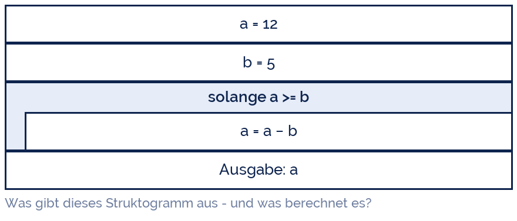

fietzfotos
fietzfotos
Good morning!
Nur das Schöne wird die Welt retten!
Fjodor Dostojewski
Nicht verzagen, Doc Alvers fragen!
Informatik — FOS 12
Wiederholung LB 2 und OOP
Alles für Klausur 2 auf einen Blick
Nicht verzagen, Doc Alvers fragen!
Kapitel 01
Der Stoff
Zwölf Wochen in einer Tabelle
Nicht verzagen, Doc Alvers fragen!
Was drankommen kann
| Woche | Thema | das müsst ihr können |
|---|---|---|
| 11 | Grundbegriffe | Algorithmus + 5 Eigenschaften, Syntax vs. Semantik, Fehlerarten |
| 12 | Visualisierung | Struktogramm und PAP lesen und zeichnen |
| 13 | Datentypen | int/float/str/bool, Liste, Typumwandlung, // und % |
| 14 | Folge | EVA-Programm schreiben, Testfälle aufstellen |
| 15 | Auswahl | if/elif/else, and/or/not, Grenzwerte |
| 16 | Wiederholung | for mit range, while mit Abbruch, die vier Muster |
| 18 | Modularisierung | def, Parameter/Argument, return, lokal/global |
| 20/21 | OOP | Klasse, Objekt, Attribut, Methode, Vererbung, Kapselung, Polymorphie |
Schwerpunkt sind die Grundstrukturen — sie stecken in fast jeder Aufgabe
Nicht verzagen, Doc Alvers fragen!
Syntaxkarte I: Ein- und Ausgabe, Grundstrukturen
x = int(input('...')) # Eingabe + Umwandlung
print(f'{wert:.2f}') # formatierte Ausgabe
if a >= b: ... elif a == 0: ... else: ...
for i in range(1, 11): ... # 1 bis 10
for e in liste: ... # ueber alle Elemente
while bedingung: ... # solange, kopfgesteuert
7 // 2 -> 3 7 % 2 -> 1 2 ** 10 -> 1024Nicht verzagen, Doc Alvers fragen!
Syntaxkarte II: Funktionen und Klassen
def name(p1, p2=0):
return ergebnis
class Ding:
def __init__(self, wert):
self.wert = wert
def zeige(self):
print(self.wert)
class Unterding(Ding): # Vererbung
def __init__(self, wert, extra):
super().__init__(wert) # Konstruktor der Oberklasse
self.extra = extraNicht verzagen, Doc Alvers fragen!
Kapitel 02
Aufgabentyp 1
Ein Struktogramm von Hand durchspielen
Nicht verzagen, Doc Alvers fragen!
Verfolgt die Werte
Die Aufgabe heißt Trace oder Handsimulation — Werte Zeile für Zeile mitschreiben
Legt eine Tabelle an: eine Spalte je Variable, eine Zeile je Durchlauf
Erst danach die zweite Frage beantworten: was berechnet der Algorithmus eigentlich?

Nicht verzagen, Doc Alvers fragen!
Die Trace-Tabelle dazu
| Durchlauf | a vorher | a >= b ? | a nachher |
|---|---|---|---|
| 1 | 12 | ja | 7 |
| 2 | 7 | ja | 2 |
| 3 | 2 | nein | 2 — Schleife endet |
| Ausgabe | 2 |
Ergebnis 2 — das ist der Rest von 12 geteilt durch 5, also 12 % 5
Wiederholtes Abziehen ist die Division mit Rest — so rechnet ein Prozessor sie tatsächlich
Prüft immer den letzten Schleifendurchlauf: läuft er noch oder nicht mehr?
Nicht verzagen, Doc Alvers fragen!
Kapitel 03
Aufgabentyp 2
Fehler finden und Programme umschreiben
Nicht verzagen, Doc Alvers fragen!
Finde die drei Fehler
def groesste(werte):
groesste = 0
for i in range(1, len(werte)):
if werte[i] > groesste:
groesste = werte[i]
print(groesste)
zahlen = [-5, -12, -3]
ergebnis = groesste(zahlen)
print('Groesste:', ergebnis)Nicht verzagen, Doc Alvers fragen!
Auflösung
| Fehler | Wirkung | Korrektur |
|---|---|---|
| Start bei 0 statt beim ersten Wert | bei negativen Zahlen kommt 0 heraus | groesste = werte[0] |
| range(1, ...) überspringt Index 0 | erster Wert wird nie geprüft | range(len(werte)) oder for w in werte |
| print statt return | die Funktion liefert None | return groesste |
| Name = Funktionsname | unschön, verdeckt die Funktion | groesster oder maximum |
Solche Aufgaben fragen nach Fehlerart (Syntax, Laufzeit, Logik) und Korrektur
Der Testfall [-5, -12, -3] entlarvt den ersten Fehler sofort — Randfälle prüfen!
Nicht verzagen, Doc Alvers fragen!
Aufgabentyp 3: umschreiben
Struktogramm → Python und Python → Struktogramm — beide Richtungen werden geprüft
for → while und zurück: eine Zählschleife lässt sich immer als bedingte Schleife schreiben
Verschachteltes if → elif: gleiche Logik, flachere Form
Hauptprogramm → Funktionen: einen Block herausziehen, Parameter und return bestimmen
Achtet beim Umschreiben darauf, dass die Testfälle weiter dasselbe liefern
Nicht verzagen, Doc Alvers fragen!
Aufgabentyp 4: OOP erklären und anwenden
Begriffe erklären und am eigenen Beispiel zeigen: Klasse, Objekt, Attribut, Methode
Ein UML-Klassendiagramm lesen und daraus die Klasse in Python schreiben
Eine Unterklasse ergänzen: super() im Konstruktor, eine Methode überschreiben
Begründen, warum ein Attribut gekapselt gehört — mit einem Beispiel, was sonst passiert
Bewerten: Wann lohnt OOP, wann reicht Modularisierung? Argumente: Zustand, Anzahl, Erweiterbarkeit
Nicht verzagen, Doc Alvers fragen!
Kapitel 04
Zur Klausur
Wie ihr die Punkte tatsächlich holt
Nicht verzagen, Doc Alvers fragen!
Operatoren — was verlangt wird
| Operator | Anforderung | was ihr schreibt |
|---|---|---|
| nennen, angeben | AFB I | Stichworte, keine Sätze nötig |
| beschreiben, darstellen | AFB I–II | vollständige Sätze oder ein Diagramm |
| erklären, begründen | AFB II | Ursache und Wirkung, mit „weil“ |
| anwenden, implementieren | AFB II | lauffähiger Code oder Struktogramm |
| bewerten, sich positionieren | AFB III | Kriterien nennen, abwägen, entscheiden |
Der Operator sagt, wie ausführlich geantwortet wird — „nennen“ braucht keine Begründung, „bewerten“ schon
Nicht verzagen, Doc Alvers fragen!
Sechs Tipps für die Klausur
Erst alles lesen, dann anfangen — mit der Aufgabe beginnen, die ihr sicher könnt
Bei Programmieraufgaben erst das Struktogramm skizzieren, das kostet zwei Minuten und rettet zehn
Variablennamen sprechend wählen — Lesbarkeit wird bewertet
Bei Schleifen sofort prüfen: Initialisierung da? Abbruch erreichbar? Zaunpfahl stimmt?
Bei Trace-Aufgaben immer die Tabelle hinschreiben, nicht im Kopf rechnen
Teilpunkte mitnehmen: Ansatz aufschreiben, auch wenn das Programm nicht fertig wird
Nicht verzagen, Doc Alvers fragen!
Wer das Struktogramm hinbekommt, hat die Aufgabe verstanden. Der Python-Code ist danach nur noch Abschreiben.
Merksatz
Nicht verzagen, Doc Alvers fragen!
Wie es nach der Klausur weitergeht
Lernbereich 3A: Projekt Webtechnologie — 20 Unterrichtsstunden, Wochen 23 bis 32
Ihr arbeitet in Teams an einer eigenen Webpräsenz mit Datenbankanbindung
Alles bisherige kommt zusammen: Datenbanken aus LB 1, Algorithmen aus LB 2
Am Ende steht eine Präsentation — sie zählt wie eine Klausur
Denkt schon in den Winterferien über ein Thema nach, das euch wirklich interessiert
Nicht verzagen, Doc Alvers fragen!